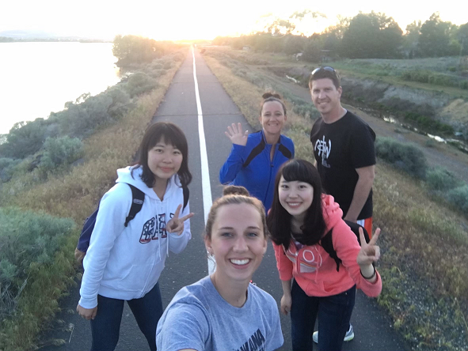

■満足している点
海外への留学制度が充実している点。神奈川大学のページを見ると、
派遣交換留学や推薦語学研修、海外インターンシップなど、様々なプログラムが存在し、国際経営という名の通り海外に開けている点がこの学部のいいところだと思う。また、ひらつかキャンパス内でも交換留学に来ている海外の学生を見かける。日本にいても、留学生と知り合える機会はなかなかないが、この学部では、行動を起こしたいと思う人にはチャンスがあるところが良い点であると思う。

■不満な点
一方的かつ同じような授業が多いこと。人間の集中力の持続時間に関する記事はたくさんあるが、100分を超える記事は見たことがない。加えて、じっと座ったまま、教授の話をただただぼーっとしながら聞く授業に意味はあるのかと感じてしまう。PDFやPowerPointのスライドをそのまま読み上げるだけの授業に、お金を払う意味があるのかと度々思うことが多い。自分の姿勢次第で変わるのかもしれないが…。
今まで取った経営学部の授業の中で、特に興味を持ったのが広告に関する授業だったので、広告についてもっと調べてみたいと思っている。また、このゼミでは自分で考えたことを形にすることができるため、プログラミングや3Dプリンターなどの使い方を身に着け、新しい広告のカタチを実現できたら面白いと思う。
専門入門をとっていた時にも感じたが、周りの仲間と意見を交換する機会が多く、別の視点からの意見や、自分の考えられなかった新しい知識を知ることができる点にとても惹かれた。同じような志を持った仲間と切磋琢磨し、意見を積極的にかわしながら、広い視野を持ち、学んでいきたいと思っている。